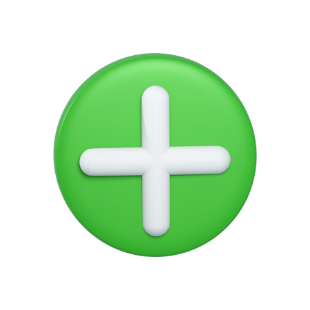

Donate to these charities!
Click the website names to be redirected! :)
-

Action for Healthy Kids- Aims to reduce the childhood obesity epidemic in the US by connecting schools and families to ensure the physical and emotional health of children in underserved communities.
-
Meals on Wheels America - Focuses on the physical and social well-being of seniors by delivering nutritious meals, friendly visits, and safety checks.
-
World Vision - Promotes the health and well-being of people living in poverty by economically empowering underprivileged communities.
-
Food for the Hungry - Helps impoverished communities improve their health and well-being by working with them to create and put in place lasting solutions to poverty.
-
The SeekHer Foundation - Works to enhance women's mental health through advocacy, research, and funding support.
-
Special Olympics - Supports the well-being of individuals with disabilities through year-round sports training and athletic events.
-
The Fresh Air Fund - Helps people with mental illness and their families through advocacy, education, support, and public awareness.
-
The Child Mind Institue - Supports children with mental health and learning challenges through care, education, and science.
-
The National Alliance on Mental Illness - Provides advocacy, education, support, and public awareness to promote the health and well-being of individuals with mental illness and their families.